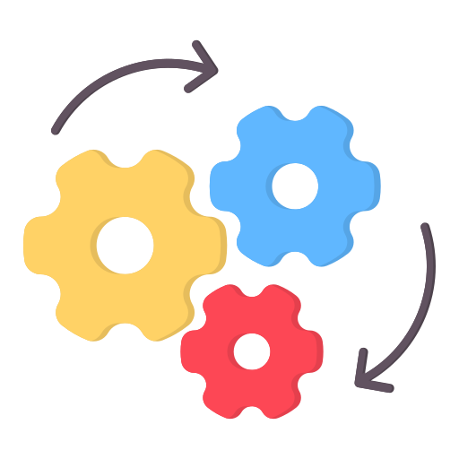
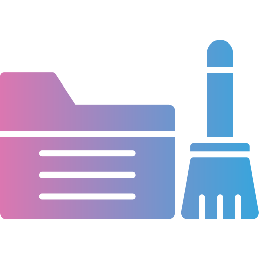

The dataset includes about 8,000 tweets collected over one week (January 1–7, 2025). Each tweet is an anonymized user comment with details like the time it was posted. The tweets include all kinds of content some normal, some potentially harmful, such as threats, insults, or rude language. The data is cleaned and user privacy is protected. This dataset helps us study harmful content and build tools to detect it. We handle all data carefully and responsibly.
The primary goal is to develop an effective and adaptive moderation pipeline that combines the strengths of machine learning and human review. By integrating automated classifiers with manual assessment, the system aims to improve accuracy in detecting harmful content across social media platforms.
Beyond detection, the project also seeks to proactively identify linguistic patterns, trending hashtags, and OSINT (Open-Source Intelligence) signals that may indicate emerging threats. This dual approach supports both real-time moderation and strategic foresight for online safety teams.



In today’s digital age, content moderation plays a crucial role in protecting users and maintaining the integrity of online platforms. The increasing volume of user generated content particularly on social media presents both opportunities and challenges. Among the most pressing challenges is the spread of harmful content such as hate speech, misinformation, graphic violence, and abusive language.
Traditional moderation systems often struggle with scale, context, and cultural nuance. To address this, our project introduces a hybrid moderation workflow that combines Machine Learning (ML) with human review to improve both accuracy and efficiency. This system is designed to detect harmful content, identify emerging threat indicators such as evolving slurs, code words, or trending hashtags, and support proactive content moderation efforts.
The ultimate goal is to help Trust & Safety teams stay ahead of online harms by reducing false positives and negatives, adapting to new threats in real time, and ensuring scalable moderation processes. This project emphasizes ethical AI use, contextual understanding, and operational feasibility key components for creating safer online spaces.

This project demonstrates a complete workflow for detecting harmful content on social media using machine learning models combined with human review.
The dataset used originates from Kaggle.com and is intended for research and educational purposes.
- Loads and preprocesses raw comment data
- Applies transformer-based toxicity models (e.g., Detoxify, HuggingFace)
- Integrates human review labels to validate and improve model predictions
- Identifies false positives and false negatives for error analysis
- Provides clear evaluation metrics and visualizations
- Highlights real-world challenges in content moderation
Note on Data Usage:
This project is for educational and portfolio purposes. All data is handled responsibly.
This project implements a full-cycle pipeline to detect and review harmful content on social media using both machine learning models and manual validation. The process reflects a practical content moderation setup, integrating transformer-based models with OSINT-inspired keyword checks and human-in-the-loop evaluation.
1. Data Collection and Preparation
- Dataset: 8,000 tweets from 01–07 January 2025, sourced from Kaggle for research.
- Includes tweet metadata (location, user ID, engagement metrics).
- Data imported via pandas and deduplicated on tweet text to ensure uniqueness.
!pip install detoxify tqdm transformers datasets torch
import pandas as pd # Data manipulation and analysis with DataFrames
import numpy as np # Numerical operations and array handling
import matplotlib.pyplot as plt # Plotting static and interactive visualizations
import seaborn as sns # Statistical data visualization built on matplotlib
from sklearn.metrics import classification_report, confusion_matrix # Model evaluation metrics
from detoxify import Detoxify # Pre-trained model for toxic content detection
from transformers import pipeline # Access to transformer based NLP models (HuggingFace)
from tqdm import tqdm # Progress bars for loops and iterations
from google.colab import drive # To mount Google Drive in Colab
import pandas as pd
file_path = '/content/drive/MyDrive/Notebook Twitter Project/Raw-Data-Week-1,Jan-2025.csv'
df = pd.read_csv(file_path)
df.head()
2. Toxicity Detection using Machine Learning Models
Two pre-trained transformer models were used to score tweets:
A. Detoxify (multi-label classifier)
- Outputs scores for: toxicity, severe_toxicity, obscene, threat, insult, identity_attack.
- Tweets with toxicity > 0.8 flagged for further review.
B. Toxic-BERT (binary classifier)
- Classifies tweets as "TOXIC" or "NON_TOXIC".
- Serves as a cross-check to Detoxify results.
from detoxify import Detoxify
detoxify_model = Detoxify('original')
from tqdm import tqdm
from detoxify import Detoxify
import pandas as pd
detoxify_model = Detoxify('original')
scores = []
for tweet in tqdm(df['tweet'], desc="Scoring tweets"):
score = detoxify_model.predict(tweet)
scores.append(score)
scores_df = pd.DataFrame(scores)
df = pd.concat([df.reset_index(drop=True), scores_df], axis=1)
df.head()
toxicity_threshold = 0.8
df['ml_flagged'] = df['toxicity'] > toxicity_threshold
print(df['ml_flagged'].value_counts())
from transformers import pipeline
classifier = pipeline("text-classification", model="unitary/toxic-bert")
sample_text = "I hate you and hope bad things happen to you!"
result = classifier(sample_text)
print(result)
from transformers import pipeline
from tqdm import tqdm
import pandas as pd
classifier = pipeline("text-classification", model="unitary/toxic-bert")
toxic_labels = []
toxic_scores = []
for tweet in tqdm(df['tweet'], desc="Cross-checking with Toxic-BERT"):
try:
result = classifier(tweet[:512])[0]
toxic_labels.append(result['label'])
toxic_scores.append(result['score'])
except Exception as e:
toxic_labels.append("error")
toxic_scores.append(0)
df['toxicbert_label'] = toxic_labels
df['toxicbert_score'] = toxic_scores
df.head()
3. Human Review
After processing and scoring the tweets with ML models, the results need to be reviewed manually to validate and improve accuracy. This step saves the current dataset, including model predictions and metadata as a timestamped CSV file in my Google Drive. This makes it easy to share and track different versions of the data for human annotation and further analysis.
4. Manual Validation Process
In this step, I focus on validating the model’s harmful content predictions by performing a manual review grounded in OSINT (Open Source Intelligence) principles. I first filter tweets that the Detoxify and HuggingFace models flagged as harmful, then review each tweet to confirm whether it truly violates community guidelines (X Rules and Policies). The manual judgment categorizes tweets as either "harmful" or "safe" in a Final Review column.
The criteria for this review align with specific sections of the community rules and policies, focusing on severe toxicity, obscenity, threat, insult, and identity attack. Leveraging OSINT techniques, such as keyword analysis, linguistic pattern recognition, and contextual assessment, helps ensure thorough validation beyond automated detection. This approach helps improve overall accuracy by identifying false positives and false negatives, which the models alone might miss or misclassify.
After reviewing tweets flagged as harmful by the models, the next step involves manually checking tweets marked as safe by searching for critical keywords and linguistic markers identified through OSINT research terms like "Nigga", "Porn", "Child", "Teenager", and "Sex" that commonly appear in harmful content. This targeted keyword search is informed by ongoing OSINT monitoring to detect emerging threats and evolving harmful language patterns.
By combining automated filtering with OSINT supported human insight, this process ensures a more comprehensive and adaptive detection system. It effectively closes gaps where models may underperform, providing a robust defense against harmful content.
5. Model Evaluation Against Human Judgment
This section compares the harmful content labels predicted by the machine learning models with those assigned through manual human review. It evaluates model accuracy by identifying matches, false positives (model flagged safe content as harmful), and false negatives (model missed harmful content). This comparison not only highlights areas for model improvement but also reinforces the value of OSINT-informed human validation in maintaining effective, proactive content moderation.
# Load the raw model predictions and human review datasets from Google Drive
import pandas as pd
raw_path = '/content/drive/MyDrive/Notebook Twitter Project/RawData.csv'
review_path = '/content/drive/MyDrive/Notebook Twitter Project/HumanReview20250721_230147 - Clean Data.csv'
df_raw = pd.read_csv(raw_path)
df_review = pd.read_csv(review_path)
# Clean column names by removing whitespace and converting to lowercase for consistent merging
df_raw.columns = df_raw.columns.str.strip().str.lower()
df_review.columns = df_review.columns.str.strip().str.lower()
#Merges the two datasets using the unique identifier id, keeping only the common rows (how='inner').
df = pd.merge(df_raw, df_review[['id', 'human review']], on='id', how='inner')
#Cleans and standardizes the label text to avoid mismatch during comparison and maps the model’s harmful/not harmful labels to human review’s violation/safe.
df['transformer_harmful'] = df['transformer_harmful'].str.lower().str.strip()
df['human review'] = df['human review'].str.lower().str.strip()
df['transformer_harmful'] = df['transformer_harmful'].replace({
'harmful': 'violation',
'not harmful': 'safe'
})
#This part creates three new columns in the dataframe to help analyze the agreement between the model's predictions and the human review labels, These columns are key to quantitatively assessing the model's errors and accuracy by breaking down where it agrees or disagrees with human judgment.
df['match'] = df['transformer_harmful'] == df['human review']
df['false_positive'] = (df['human review'] == 'safe') & (df['transformer_harmful'] == 'violation')
df['false_negative'] = (df['human review'] == 'violation') & (df['transformer_harmful'] == 'safe')
#Displays the total number of evaluated samples and counts of correct predictions and errors.
print(f"Total Samples: {len(df)}")
print("Evaluation Summary:")
print(f"Correct Matches: {df['match'].sum()}")
print(f"False Positives (Model says Violation, human says Safe): {df['false_positive'].sum()}")
print(f"False Negatives (Model says Safe, human says Violation): {df['false_negative'].sum()}")
#Saves the dataframe including evaluation results and combined dataset with evaluation columns back to Google Drive for record-keeping and further analysis
output_path = '/content/drive/MyDrive/Notebook Twitter Project/Final_evaluation_result.csv'
df.to_csv(output_path, index=False)
print(f"\n Saved to: {output_path}")
#Filters and displays tweets where the model made incorrect predictions for deeper manual inspection.
false_positives = df[df['false_positive']]
display(false_positives[['tweet', 'transformer_harmful', 'human review']])
false_negatives = df[df['false_negative']]
display(false_negatives[['tweet', 'transformer_harmful', 'human review']])
#Filters and displays tweets where the model made incorrect predictions for deeper manual inspection and to Show example false positives and false negatives with relevant columns to inspect the errors manually
false_positives = df[df['false_positive']]
display(false_positives[['tweet', 'transformer_harmful', 'human review']])
false_negatives = df[df['false_negative']]
display(false_negatives[['tweet', 'transformer_harmful', 'human review']])